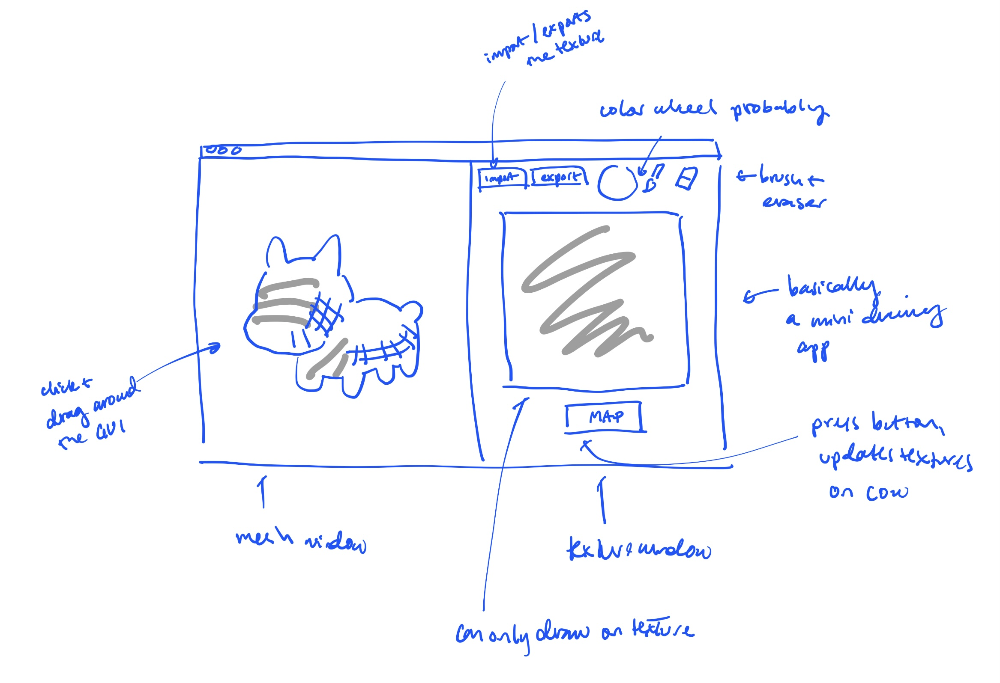
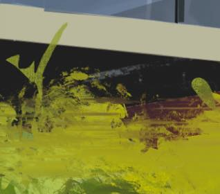
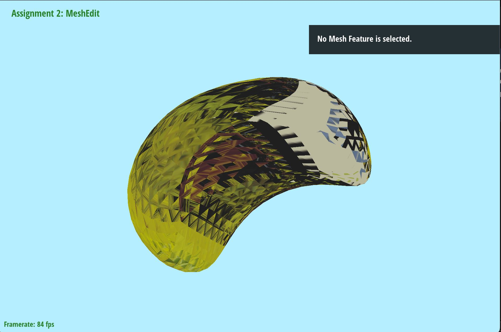
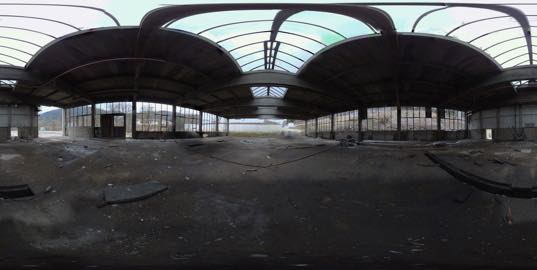
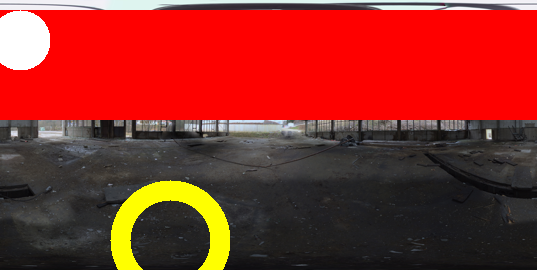
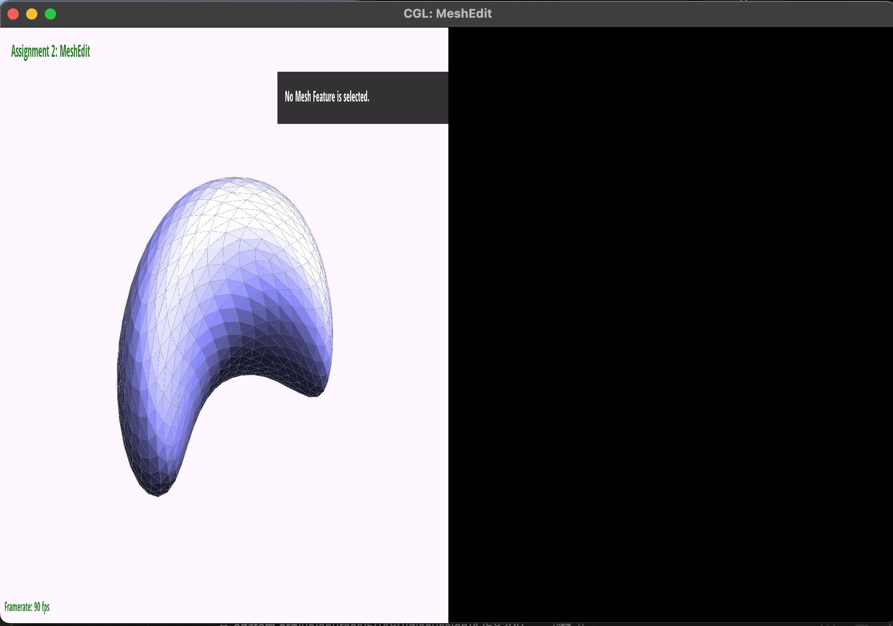

CS 184: Computer Graphics and Imaging, Spring 2024
Final Project Checkpoint
Rebecca Feng Khai Sam, Olivia Xie, and Mahum Khan
Link to milestone video
Link to progress slides
Our Goal
Our project involves creating a mini texture mapping tool, where the user can
modify or create a texture on a mini drawing app, and then press
a button to map the image texture onto the model.

What we have accomplished
-
Implementation of texture mapping.
We extracted vertex positions and UV coordinates from a .dae
file and passed them to the shaders to be rendered.
|

The sample texture
|

The sample texture mapped onto the bean
|
The object’s UV coordinates are incorrectly placed for each
vertex. In theory, multiple UV coordinates share the same vertex. However, OpenGL only allows for one texture coordinate
per vertex. Thus, we will create a new vertex for each UV coordinate,
by directly reading the Polymesh data structure (which holds all the information
about each vertex, its normals, and its texture coordinates).
- Implementation of png texture imports, edits, and exports.
We imported the lodepng library and created a class wrapper
to abstract the underlying library calls. We have successfully imported a png file,
edited its pixel values, and exported it.
|

The original image
|

The modified PNG using our code
|
Furthermore, we were able to separate edits onto a separate layer
so that an eraser tool can be applied to recover the original png values.
-
Implementation of GUI
We have successfully implemented split-screen.

Progress relative to plan
Project work is progressing; albeit, delayed due to unexpected cross-platform
bugs between Windows and Mac and difficulty understanding OpenGL 2.1. We are still
working on base requirements.
Updated work plan
| Week of Apr 16 |
- Implement UI (buttons, etc.) - Olivia
- Fix split screen dimensions and lag
- Display texture on right-screen.
- Fix texture mapping - Rebecca
- Implement brush features
|
| Week of Apr 23 |
- Finish implementing brush features
- Implement materials-related features if time
- Clean up codebase
- Debug
|
| Week of Apr 30 |
|